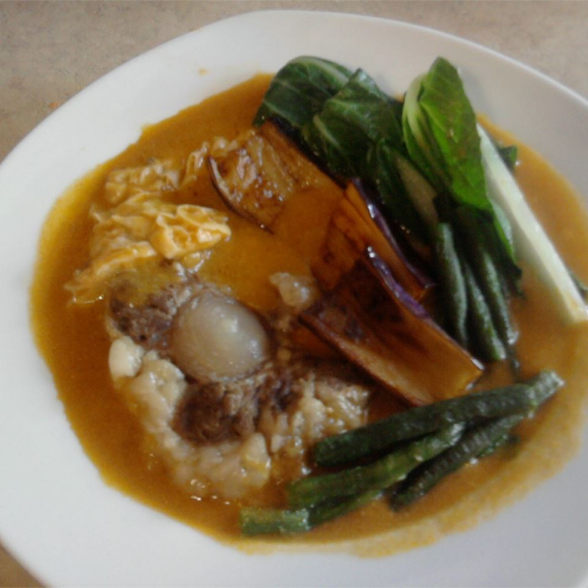
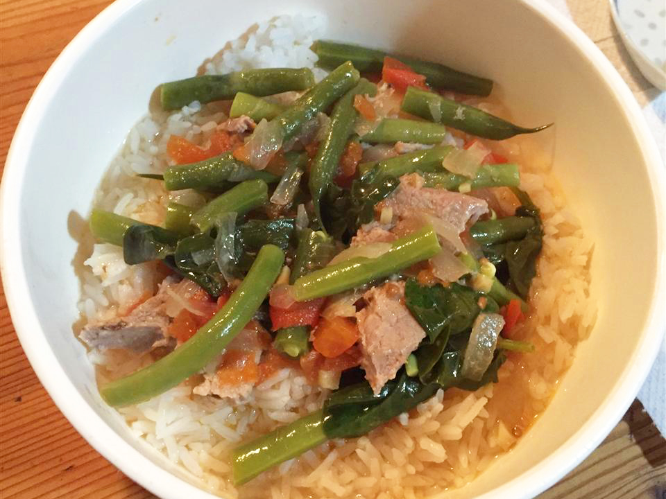
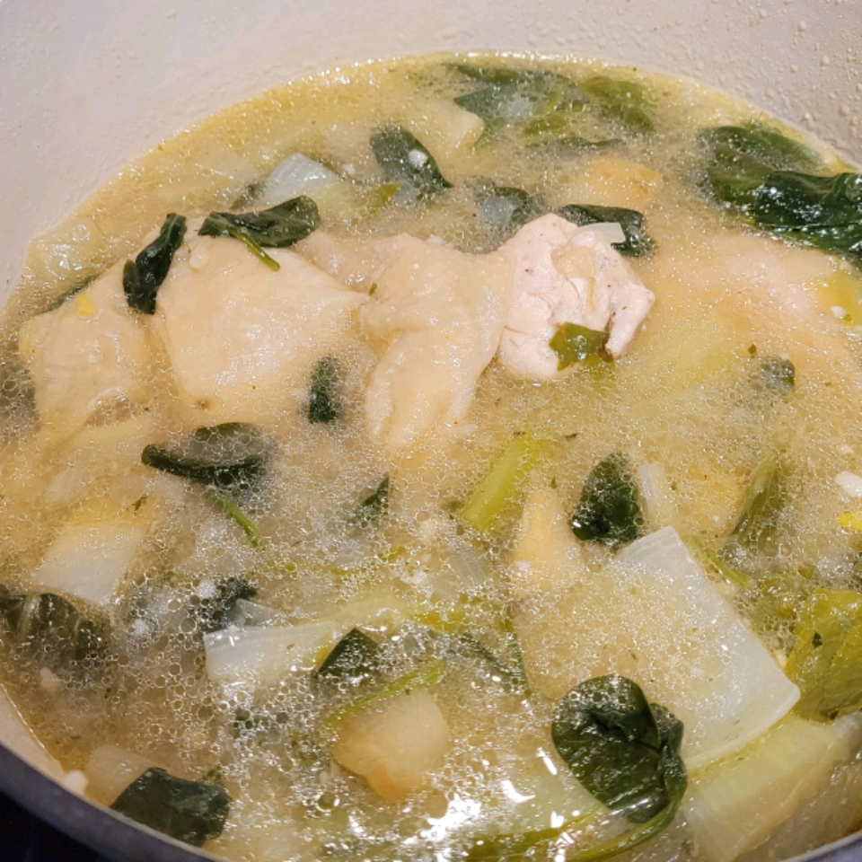
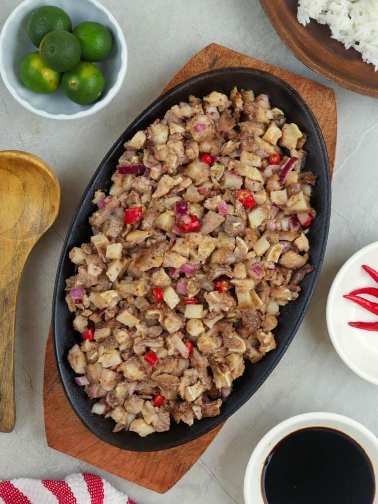

My Top 5 Filipino Dishes
Chicken Adobo

Description
Classic chicken adobo recipe that's simple to make and loved by all who
try it. It has been modified to be a bit saucier than traditional adobo
and is delicious served over rice.
Ingredients
- 2 tablespoons vegetable oil
- 1 (3 pound) chicken, cut into pieces
- 1 (3 pound) chicken, cut into pieces
- 2 tablespoons minced garlic
- ⅔ cup low sodium soy sauce
- ⅓ cup white vinegar
- 1 tablespoon garlic powder
- 2 teaspoons black pepper
- 1 bay leaf
Steps
-
Heat vegetable oil in a large skillet over medium-high heat. Cook
chicken pieces until golden brown, 2 to 3 minutes per side. Transfer
chicken to a plate and set aside.
-
Add onion and garlic to the skillet; cook until softened and brown,
about 6 minutes. Pour in soy sauce and vinegar and season with garlic
powder, black pepper, and bay leaf.
-
Return chicken to pan, increase heat to high, and bring to a boil.
Reduce heat to medium-low, cover, and simmer until chicken is tender and
cooked through, 35 to 40 minutes.
Kare-Kare

Description
This dish is rich in flavor due to the slow cooking of the oxtail. Oxtail
can be cooked to tenderness a day before so you can skim off the fat
making the dish more heart healthy. Using a pressure cooker will speed up
cooking time, but will lose much of the flavor. Serve with rice and shrimp
paste (bagoong).
Ingredients
- 4 ½ pounds beef oxtails
- 3 cups water
- 2 beef bouillon cubes
- ½ pound bok choy, chopped
- ½ pound long beans, cut into bite-sized pieces
- ½ pound eggplant, cubed
- 2 tablespoons olive oil
- 1 onion, chopped
- 2 cloves garlic, minced
- 1 teaspoon achiote powder
- 3 tablespoons smooth peanut butter
Steps
-
Combine the oxtails and water in a large pot; bring to a boil, reduce
heat to medium-low, and simmer at least 2 hours.
-
Skim as much fat from the top of the liquid as possible. Crumble the
beef bouillon cubes into the liquid and allow to dissolve. Remove the
meat from the broth and set aside. Add the bok choy, long beans, and
eggplant to the broth and simmer until tender.
-
While the vegetables simmer in the broth, heat the olive oil in a large
pot over medium heat. Cook and stir the onion and garlic in the hot oil
until tender. Stir the achiote powder into the mixture to add a little
color. Add the peanut butter and stir until it's melted into the
mixture. Add about half the broth to the pot; bring to a simmer for 5
minutes. Add the oxtails and cook another 5 minutes before adding the
remaining broth with the vegetables. Serve hot.
Pork Sinigang

Description
Sinigang is a Filipino soup cooked with pork. Serve with rice and for
additional sauce, use soy or fish sauce. If you want to, you can add what
Filipinos call gabi gabi, which is a small taro root. When peeled they
look like potatoes. You can add five to six of them when you add the water
and make sure they are cooked through. Take them out when they are cooked
because they can get too soft.
Ingredients
- 1 tablespoon vegetable oil
- 1 small onion, chopped
- 1 teaspoon salt
- 1 (1/2 inch) piece fresh ginger, chopped
- 2 plum tomatoes, cut into 1/2-inch dice
- 1 pound bone-in pork chops
- 4 cups water, more if needed
- 1 (1.41 ounce) package tamarind soup base (such as Knorr®)
- ½ pound fresh green beans, trimmed
Steps
-
Heat vegetable oil in a skillet over medium heat. Add onion; cook and
stir until softened and translucent, about 5 minutes. Season with salt.
-
Stir in ginger, tomatoes, and pork chops. Cover and reduce heat to
medium-low. Turn the pork occasionally, until browned.
-
Pour in water and tamarind soup base. Bring to a boil, then reduce heat
and simmer until the pork is tender and cooked through, about 30
minutes.
- Stir in green beans and cook until tender.
Chicken Tinola

Description
Tinola is an easy, one-pot soup from the Philippines. Chicken, chayote
squash (or papaya!), bok choy, and spinach are simmered with fresh ginger
in a savory broth that's often served with white rice.
Ingredients
- 1 tablespoon cooking oil
- 1 medium onion, chopped
- 2 cloves garlic, minced
- 1 (1 1/2 inch) piece fresh ginger, peeled and thinly sliced
- 1 tablespoon fish sauce
- 3 pounds chicken legs and thighs, rinsed and patted dry
- 2 (14 ounce) cans chicken broth
- 1 chayote squash, peeled and cut into bite-sized pieces
- salt and ground black pepper to taste
- 1 head bok choy, chopped
- 1 (8 ounce) package fresh spinach, chopped
Steps
-
Heat oil in a large pot over medium heat. Add onion and garlic; cook and
stir until fragrant, about 2 minutes. Add ginger and fish sauce; cook
and stir for 1 to 2 minutes. Stir in chicken and cook for 5 minutes.
-
Heat oil in a large pot over medium heat. Add onion and garlic; cook and
stir until fragrant, about 2 minutes. Add ginger and fish sauce; cook
and stir for 1 to 2 minutes. Stir in chicken and cook for 5 minutes.
-
Add bok choy and spinach; cook until spinach is just wilted, 1 to 2
minutes. Serve hot.
Sisig

Description
This Filipino dish of pig's ears in a spicy, sweet and sour sauce is a
perfect appetizer when people are drinking beer
Ingredients
- 2 ¼ pounds pig's ears, cut into thin slices
- ¾ cup water
- ⅓ cup white vinegar
- 2 tablespoons white sugar
- 1 teaspoon salt
- ¼ teaspoon ground black pepper
- 1 green bell pepper, cut into thin strips
- 1 red bell pepper, cut into thin strips
- 1 large green chile pepper, seeded and sliced
Steps
-
Bring a large pot of water to a boil; boil pig's ears until no longer
pink, about 10 minutes. Drain. Let cool, at least 15 minutes.
-
Combine 3/4 cup water, vinegar, sugar, salt, and pepper in a large bowl.
Add the pig's ears and mix together. Cover with plastic wrap and keep
refrigerated. Serve with green bell pepper, red bell pepper, and green
chile.
Back to Homepage